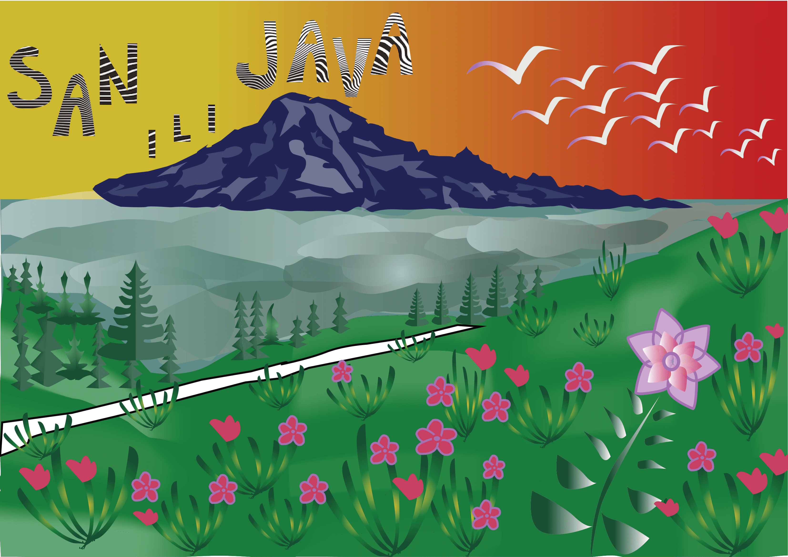

Slike i multimedijski elementi zadataka s vježbi
U ovoj vježbi smo izrađivali vlastiti font u Fontgrapheru te ga isprobavali u Adobe Photoshopu.

U ovoj vježbi smo koristili font iz prošle vježbe kako bi napravili maski od vlastitih inicijala ispisanih po krivuljama.

U ovoj vježbi smo koristili Adobe Illustrator te pen tool-om crtali oblike koje smo duplicirali, kopirali,izvodili transformacije, a također smo definirali sustave boja koje smo koristili.


U vježbi se obrađuje tema izrade složenih objekata koji se sastoje od više staza metodama spajanja (Unite/Compound path) ili oduzimanja oblika (Difference/Subtract), apliciranje različitih vrsta gradijenata (linearni, radijalni, mesh) od dvije ili više boja te transparencija i poredak slojeva u izradi složene grafike.

Nakon vježbi, kao projektni zadatak odnosno kolokvij, trebalo je napraviti pejzažnu ilustraciju koristeći sve naučene elemente pravilno i grupirajući elemente
U ovoj vježbi smo se upoznali s tehnikama digitalnog retuširanja fotografija, uklananjem nedostataka na slici te lokalnom i globalnom korekcijom boja


U vježbi smo naučili tehnike neinvazivnog koloriranja slike koje se može primijeniti na crno-bijele slike ili slike u boji kojima želimo promijeniti nijansu određenih područja. Selekcijom željenih dijelova slike stvorili smo maske kojima smo skrili ili otkrili efekte kolorizacije, a boja se aplicirala na zaseban sloj (layer).


U ovoj vježbi prošli kroz različite tehnike selektiranja jednostavnih i složenih oblika, acilj je bio napraviti jednu cjelinu, koja dodatno korekcijom boja, izgleda realistično.

U ovom projektnom zadatku, koristili smo se naučenim selekcijama, radili smo sjene, kolorirali objektne, mijenjali globalno i lokalno osvijetljenje. Koristili smo dobivene, ali i vlastite slike te za zadatak smo trebali stvoriti harmonično pravilnu cjelinu.
Ova vježba nas je naučila osnovama obrade video materijala i uvođenjem multimedije u video projekt. Rezultat vježbe je kinemagraf čija je karakteristika spajanje statične i pokretne slike.

U ovoj vježbi bavili smo se uređivanjem video materijala; izrezivanjem videa, dodavanjem efekata te zvučnog zapisa.